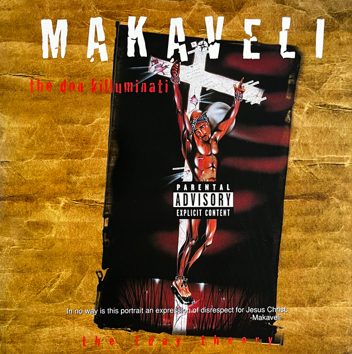
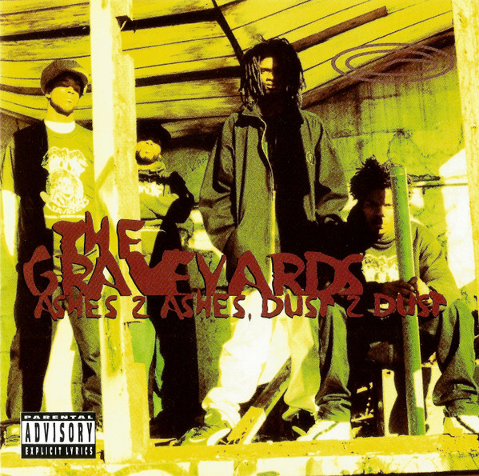
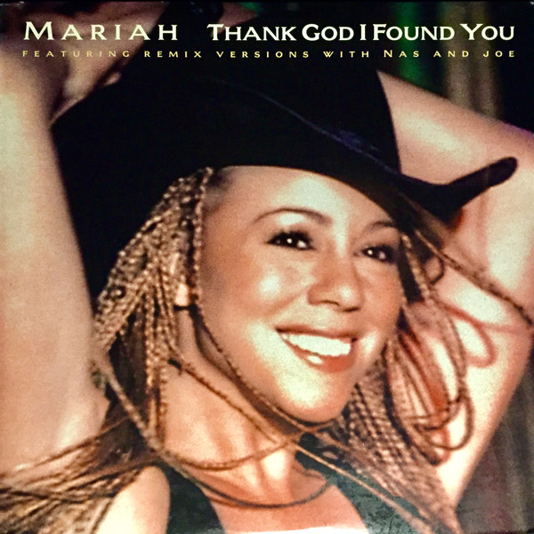
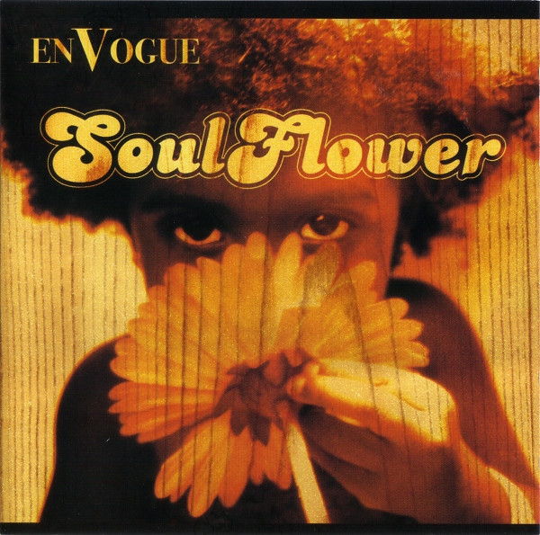
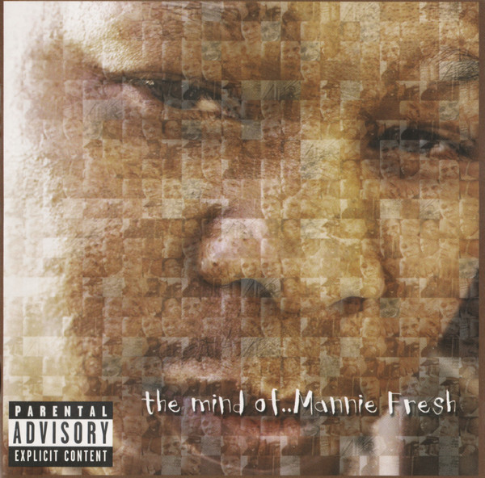
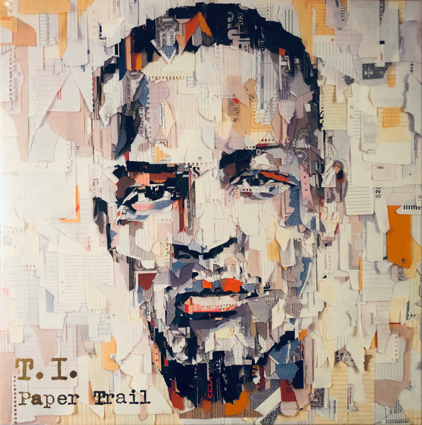

Tracks built around a Teddy Riley record — a break, a vocal snatch, a chord stab lifted and reworked into something new. This list is still being compiled.

SingleMakaveli feat. K-Ci & JoJo, Danny Boy and Aaron Hall — Toss It Up
Death Row Records

SingleThe Graveyards — Dreamm Nutt
Shantell Records

SingleMariah Carey feat. Joe and Nas — Thank God I Found You (Make It Last Remix)
Columbia

SingleEn Vogue — I Do Love You (Piece Of My Love)
33rd Street Records

SingleMannie Fresh feat. Lil' Mo, Tateeze and Reel — Shake That Ass
Cash Money Records

SingleT.I. — Collect Call
Grand Hustle
Pig & Dan — Fragments Of Silence
Bedrock Records
Snad — Italosnadi
Smallville Records